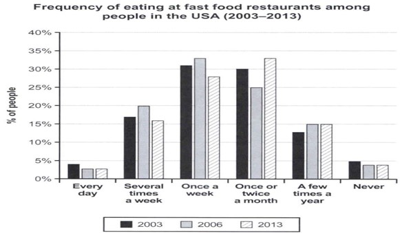

You should spend about 20 minutes on this task.
The bar chart provides information about how often people in the USA spent ate fast food from 2003 to 2013.
Summarise the information by selecting and reporting the main features making comparisons where relevant.
Write at least 150 words.
Write about the following topic:
You should spend about 40 minutes on this task.
Some people think that social networking sites have a huge negative impact on both individuals and society.
To what extent do you agree or disagree?
Give reasons for your answer and include any relevant examples from your own knowledge or experience.
Write at least 250 words.